Le langage SysML
Document original (PDF professeur) protégé par mot de passe sur le site source — voir la section Sources ci-dessous pour le mot de passe d'accès au site aroux-sii.fr.
- Décrire le besoin et les exigences.
- Traduire un besoin fonctionnel en exigences.
- Définir les domaines d'application et les critères technico-économiques et environnementaux.
- Qualifier et quantifier les exigences.
- Évaluer l'impact environnemental et sociétal.
- Isoler un système et justifier l'isolement.
- Définir les éléments influents du milieu extérieur.
- Identifier la nature des flux échangés traversant la frontière d'étude.
- Associer les fonctions aux constituants.
- Identifier et décrire les chaines fonctionnelles du système.
- Identifier et décrire les liens entre les chaines fonctionnelles.
- Caractériser un constituant de la chaine d'information.
- Savoir lire un diagramme SysML
1. Rôle
SysML est un langage de modélisation (System Modeling Language) spécifique au domaine de l'Ingénierie Système.
- Il permet la spécification, l'analyse, la conception, la vérification et la validation des systèmes et sous-systèmes.
- Il permet à tous les acteurs de parler un même langage, chacun d'eux faisant évoluer le modèle collectif avec l'avancement du projet.
- Il est particulièrement utile pour documenter les projets faisant intervenir de nombreux acteurs de différents génies (logiciel, mécanique, électrique …).
- Il est adapté aux grands projets (transport, infrastructure) et est utilisé par des groupes comme Airbus, Alsthom, Peugeot, EADS …
SysML dérive d'UML (Unified Modeling Language) centré sur l'ingénierie logicielle.
Il ne faut pas confondre :
- la méthode Ingénierie Système avec les outils comme SysML favorisant la mise en place du processus IS, SysML n'est pas une méthode.
- un système (modèle réalisé) avec son instance (un système particulier réel correspondant au modèle).
Par exemple : système = Motocyclette ← Instance = Honda Gold Wing 1832 cc.
2. Structure
SysML est essentiellement graphique.
- Il repose sur une série de 9 Diagrammes permettant de décrire les exigences attendues ou imposées, la structure du système et le comportement souhaité selon différents points de vue.
- Les diagrammes et leurs éléments sont interconnectés par des liens permettant de vérifier à chaque instant la cohérence globale du modèle.
- Il n'y a pas d'ordre pour commencer les diagrammes, ceux-ci sont enrichis par chaque acteur, au fur et à mesure de l'avancement de l'étude.
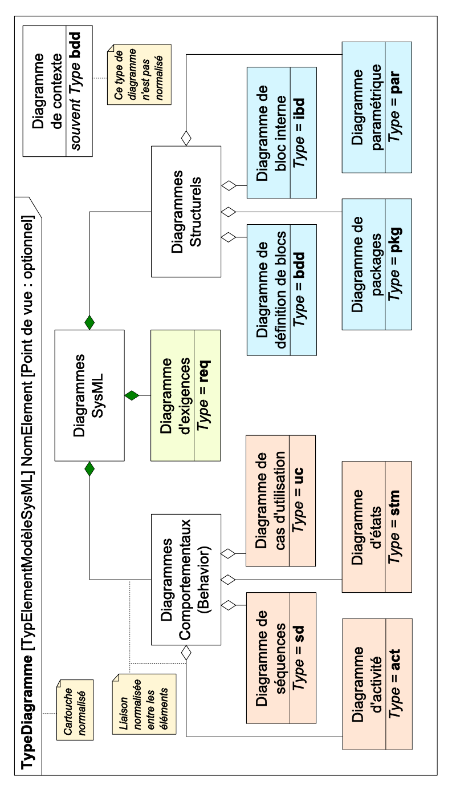
Éléments graphiques des diagrammes
Chaque diagramme SysML représente un élément particulier du modèle selon un certain point de vue : afin de le repérer, chaque diagramme comporte un « cartouche » positionné sur la partie supérieure gauche du cadre.
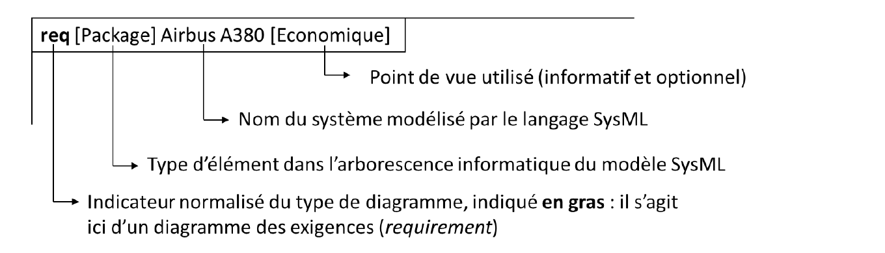
Les parties suivantes présentent les neufs diagrammes du langage SysML sur l'exemple particulier d'un drone multi-rotors utilisé pour la prise de vue aérienne lors de la réalisation de films ou de reportages.
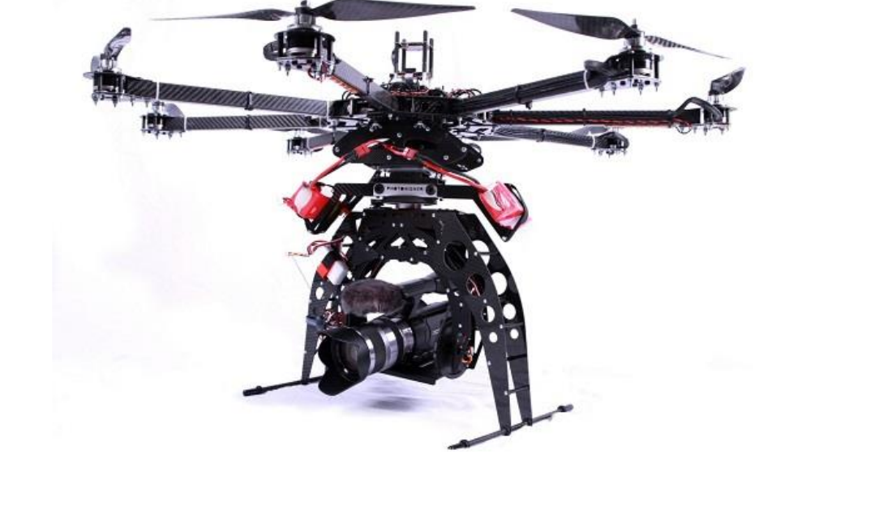
3. Système souhaité
Les diagrammes qui suivent font appel aux caractéristiques attendues du produit. Ils permettent de définir ce que l'on attend du système et comment les objectifs seront atteints.
3.1. Un drone pour le cinéma
3.1.1. Le besoin du client
Afin de réaliser des prises de vue aériennes en haute définition lors de la réalisation de reportages ou de films, des drones sont fréquemment utilisés. Ces appareils sont loués par la production à des entreprises spécialisées qui fournissent, outre le matériel, un pilote maîtrisant parfaitement le vol de son engin et pouvant donc répondre à toutes les demandes du réalisateur et de son chef opérateur, le tout pour un prix très raisonnable par rapport aux solutions classiques utilisant des avions ou des hélicoptères : on passe en effet d'un prix horaire d'au moins 2000 € HT pour un avion ou un hélicoptère à un prix journalier de 1 000 à 3000 € HT selon les prestations attendues pour le drone.
Vous trouverez une vidéo de démonstration ici : http://cine-drone.fr/video.html
3.1.2. Caractéristiques des drones
Le tableau ci-dessous montre les principales différences des trois modèles de drones S (Small), L (Large) et XL (Extra-Large) de l'entreprise Ciné-Drone.
| Caractéristiques | Modèle S | Modèle L | Modèle XL |
|---|---|---|---|
| Moteurs | 6 rotors 15 A - 12 V | 8 rotors 30 A - 12 V | 8 rotors 60 A - 12 V |
| Charge embarquée | Jusqu'à 1,5 kg | Jusqu'à 2,3 kg | Jusqu'à 5 kg |
| Charge maximale | 3 kg | 5 kg | 14 kg |
| Exemple de caméra | Go-Pro 2 | Black Magic | Red Epic |
| Vent maximal | 25 km/h | 35 km/h | 65 km/h |
| Durée de vol maximale | 12 min | 8 min | 5 min |
3.2. Diagramme transversal
3.2.1. Diagramme des exigences (req)
Une exigence permet de spécifier une fonction que doit assurer le système.
Les exigences établissent le contrat entre client et réalisateur du futur système (CdCF).
« Quelles sont les exigences auxquelles le système doit répondre ? »
Le diagramme d'exigences noté req (SysML Requirements Diagram) permet de représenter toutes les exigences du système (environnementales, économiques, fonctionnelles, techniques…).
Les éléments graphiques utilisés dans ce diagramme sont principalement des rectangles avec un titre représentant les exigences, un identifiant sous forme de numéro et une description textuelle libre mais concise. Les exigences sont en général organisées de haut en bas du général au particulier. Un chiffre ordonne les exigences et permet de juger de leur niveau hiérarchique.
Les exigences peuvent être reliées entre elles par des relations de contenance, de raffinement, ou de dérivation :
- La contenance permet de décomposer une exigence composite en plusieurs exigences unitaires, plus faciles ensuite à tracer vis-à-vis de l'architecture ou des tests.
- Le raffinement (« refine ») consiste en l'ajout de précisions, par exemple de données quantitatives.
- La dérivation (« derive » ou « deriveReqt ») consiste à relier des exigences de niveaux différents, par exemple des exigences système à des exigences de niveau sous-système, etc. Elle implique généralement des choix d'architecture.
Remarque : Ce diagramme devra être le plus simple possible pour rester lisible : il est donc inutile de poser toutes les exigences, sauf cas très particuliers. De plus, pour améliorer sensiblement la compréhension de la problématique, il est possible de réaliser plusieurs diagrammes d'exigences si nécessaire en regroupant par exemple les exigences par secteur.
Remarque importante : Dans certains cas, il est possible d'ajouter des blocs « block » qui permettent de préciser, par des conditions « satisfy », les éléments satisfaisant les exigences ciblées.
Illustration :
Pour le système étudié, il est possible de mettre en place le diagramme présenté ci-dessous dans lequel les exigences de la production apparaissent comme étant déclinées en trois exigences particulières sur les aspects économique, de norme et technique :
- Économie : le prix maximum admissible pour la réalisation de la séquence est indiqué.
- Norme : le drone doit respecter les normes les plus restrictives, ceci afin d'éviter tout problème avec la législation en cours.
- Aspect technique sur la vidéo et la capacité de vol : ces exigences sont « raffinées » (flèche en pointillés avec le stéréotype « refine ») par une précision sur des données numériques attendues en fonction des caméras dont dispose la production.
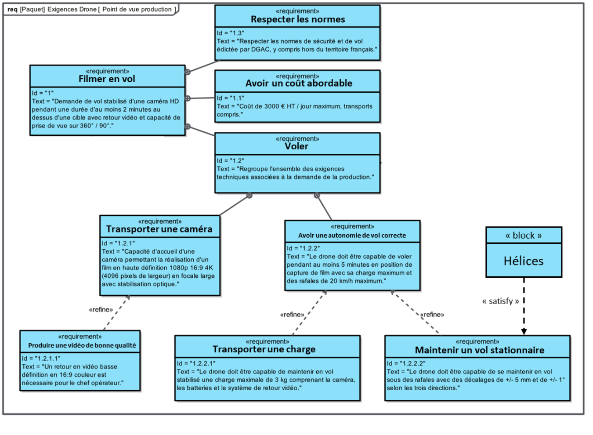
3.3. Diagrammes comportementaux
3.3.1. Diagramme de contexte
Dans une phase d'utilisation définie, le diagramme de contexte permet de définir les frontières de l'étude et précisant les différents interacteurs du milieu extérieur avec le système. Chaque élément du milieu extérieur (EME) représenté interagit avec le système et cette interaction peut s'exprimer sous la forme :
EME 1 – verbe d'action – EME 2.
Remarque : Si on a X fois un même élément extérieur, un nombre X (multiplicité) est noté en bout de connecteur de l'EME avec le système.
« Quels sont les acteurs et éléments environnants du système ? »
Illustration :
Pour le système étudié, il est possible de mettre en place le diagramme présenté ci-dessous dans lequel les exigences de la production apparaissent comme étant déclinées en trois acteurs qui interagissent avec le système et qui pilotent le drone, la nacelle et la caméra, ainsi que les cas d'utilisation reliés aux acteurs et rédigés selon le point de vue de ces derniers, et la frontière du système qui contient tous les éléments permettant d'atteindre les objectifs terminaux.
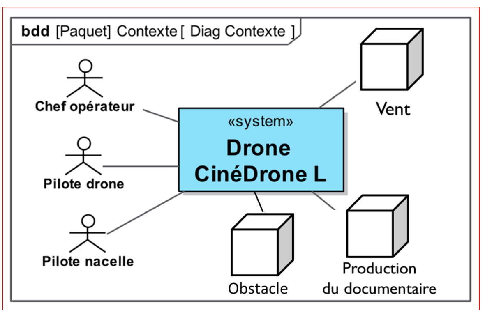
Remarque : Les liens montrent des échanges qui à ce stade, ne sont pas encore définis.
3.3.2. Diagramme des cas d'utilisation (uc)
Le diagramme des cas d'utilisation noté uc (SysML Use Case Diagram) permet de montrer les fonctionnalités du système en identifiant les services qu'il rend.
« Quels services rend le système ? »
Les éléments graphiques utilisés dans ce diagramme sont principalement :
- Les acteurs, entités extérieures au système et en interaction avec lui (représentés par le pictogramme « bonhomme bâton ») et sont reliés à un ou plusieurs cas d'utilisation par une ligne simple appelée association.
- Les cas d'utilisation sont représentés sous forme d'ovales. Ils donnent les fonctionnalités du système et sont énoncés du point de vue de l'acteur.
- La frontière du système permet de symboliser les limites du modèle (représentée par un simple rectangle englobant les cas d'utilisation), les acteurs étant à l'extérieur.
Remarque : L'énoncé d'un cas d'utilisation doit se faire hors technologie, puisqu'il est défini en termes de résultats attendus.
Illustration :
Pour le système étudié, il est possible de mettre en place le diagramme présenté ci-dessous où se retrouvent les éléments énoncés précédemment, à savoir :
- Les trois acteurs qui interagissent avec le système (liens avec les cas d'utilisation) et qui pilotent le drone, la nacelle et la caméra.
- Les cas d'utilisation reliés aux acteurs et rédigés selon le point de vue de ces derniers.
- La frontière du système qui contient tous les éléments permettant d'atteindre les objectifs terminaux.
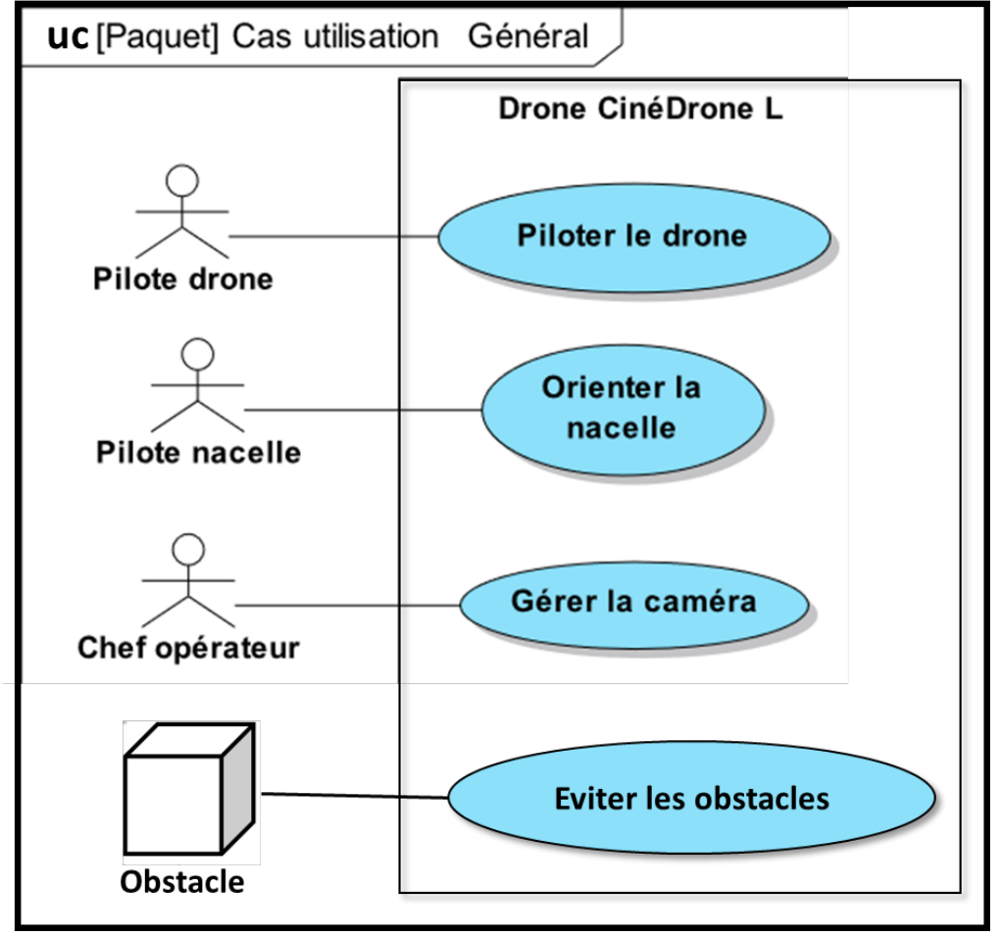
Attention : Il n'est pas nécessaire ici de mettre les cas d'utilisation correspondant à l'installation du drone ou d'entretien du drone.
Remarque : Il aurait ainsi été possible de rajouter des sous-cas d'utilisation ou des éléments graphiques complémentaires avec, par exemple, des raffinements (« refine ») ou des extensions (« extend »), etc. : cela n'aurait pas été pertinent car ce diagramme est d'autant plus intéressant qu'il reste simple et compréhensible immédiatement.
Remarque : En rajoutant des liens « include » et « extend », cela aurait pu donner :
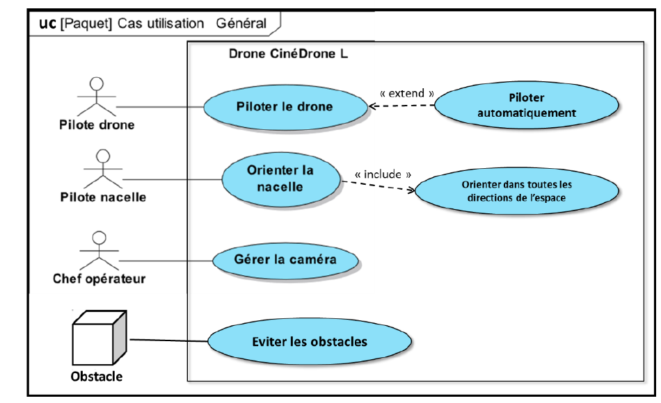
3.3.3. Diagramme des séquences (sd)
Le diagramme de séquence noté sd (SysML Sequence Diagram) permet de décrire les scénarios correspondant aux cas d'utilisation.
« Comment est réalisé ce cas d'utilisation ? »
À tout cas d'utilisation correspond au moins un diagramme de séquence.
Les éléments graphiques utilisés dans ce diagramme sont principalement :
- Des traits verticaux en pointillés appelés « lignes de vie » avec l'indication des propriétaires (en général des acteurs, le système et tout ou partie de ses sous-systèmes) sur la partie supérieure. Le temps se déroule du haut vers le bas, sans échelle particulière.
- Des flèches horizontales, avec différentes syntaxes, indiquant l'envoi et la réception de « messages », notion qui doit être prise au sens large car ils matérialisent les interactions qu'il peut y avoir entre un émetteur et un récepteur. Par exemple, l'appui sur un bouton peut être considéré comme le message envoyé (représentant dans ce cas un événement) et l'affichage d'une image sur un écran comme la réponse à cette sollicitation.
- Les bandes verticales le long d'une ligne de vie représentent des périodes d'« activation ». Elles sont optionnelles mais permettent de mieux comprendre la flèche pointillée du message de retour.
Illustration :
Pour le système étudié, il est possible de mettre en place le diagramme présenté ci-dessous qui décrit l'évolution séquentielle des échanges entre les deux techniciens de vol (le pilote du drone et le pilote de la nacelle supportant la caméra) lors de la phase de préparation au vol : cette description répond à une exigence portant sur la norme et ne représente donc pas un scénario complet car seule la phase de test préalable à l'utilisation du système est représentée, ce qui correspond à une partie des cas d'utilisation « Piloter le drone » et « Orienter la nacelle ».
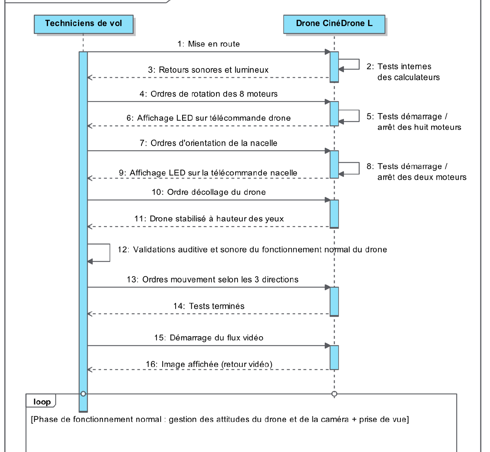
3.3.4. Diagramme d'états (stm)
Le diagramme d'états noté stm (SysML State Machine Diagram) permet de décrire le fonctionnement d'un programme sous forme de machine d'états. Il montre les différents états pris par le système (ou un sous-système) en fonction des interactions.
« Comment représenter les différents états du système ? »
Les éléments graphiques utilisés dans ce diagramme sont principalement des rectangles aux coins arrondis représentant les états. Les transitions entre les états sont représentées avec des flèches orientées et un texte les décrit.
Les transitions sont liées aux évènements et sont réalisées lorsque les évènements associés ont lieu.
Le point de départ est un point noir extérieur aux états, le point de fin est un point noir entouré d'un cercle noir.
Illustration :
Pour le système étudié, il est possible de mettre en place le diagramme d'états (stm) présenté ci-dessous qui permet de représenter les différents modes de fonctionnement du système, ainsi que les évènements qui permettent de passer de l'un à l'autre.
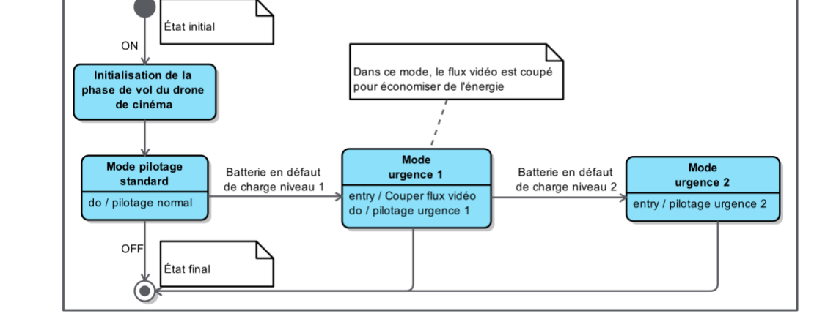
L'initialisation est un mode temporaire dans lequel le système effectue tous ses tests avant de donner la main aux pilotes. La transition est ensuite franchie automatiquement car il n'y a pas d'évènement particulier à marquer (c'est la fin de l'initialisation). Viennent ensuite le mode de fonctionnement normal puis les modes d'urgence en cas de niveau de charge insuffisant.
Le comportement lors de l'entrée et de la sortie de chaque état est décrit : par exemple, l'entrée dans le mode urgence 1 (évènement interne entry) provoque automatiquement la coupure du flux vidéo pour économiser l'énergie et un mode de pilotage dégradé (pilotage à vue) où le drone ne peut que redescendre.
État composite
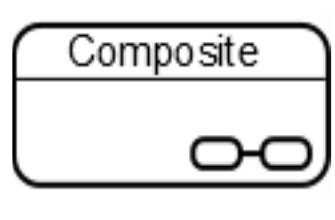
Illustration d'un état composite associé au fonctionnement du drone.
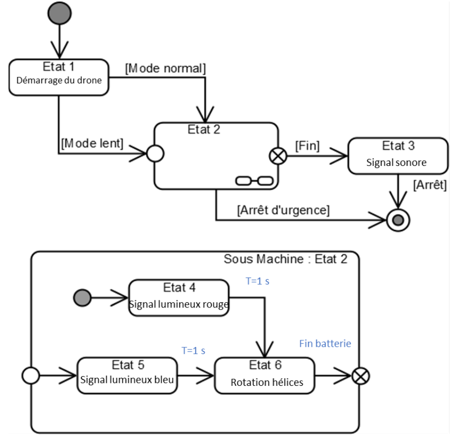
4. Système réel
4.1. Diagrammes structurels
Les diagrammes qui suivent font appel aux solutions techniques du système, c'est-à-dire aux éléments réels le constituant, et permettent de décrire les blocs de la solution et leurs interactions.
Les diagrammes de blocs sont en rapport avec la solution existante. Il faut donc mettre en place les chaînes d'information et d'énergie du système afin d'en définir les constituants.
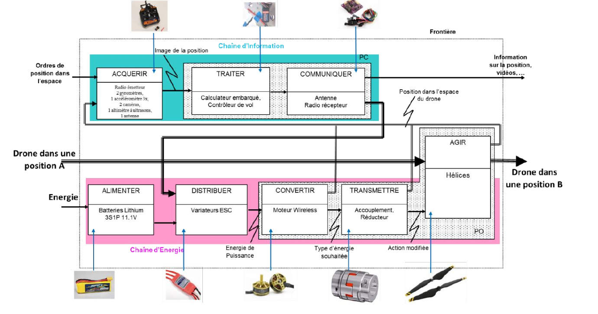
4.1.1. Diagramme de définition de bloc (bdd)
Le diagramme de définition de bloc noté bdd (SysML Block Definition Diagram) permet de :
- décrire la structure du système ;
- décrire une partie des fonctions du système ;
- représenter les liens entre les blocs.
« Qui contient quoi ? »
Graphiquement, un bloc est représenté par un rectangle avec le stéréotype « block » comprenant un titre et des compartiments étagés regroupant des propriétés particulières. Il est ensuite possible de relier les blocs au moyen de liens dont la sémantique dépend de la nature particulière de la relation : en règle générale, le lien utilisé correspond à une composition, parfois à une agrégation (trait avec losange plein ou vide), indiquant que l'élément supérieur possède l'élément inférieur. Sur ces liens, il est possible de préciser la multiplicité d'un bloc en plaçant une valeur au bout du lien.
Illustration :
Pour le système étudié, il est possible de mettre en place le diagramme de définition de blocs qui fait apparaitre une hiérarchie de blocs, indiquant ce dont chaque bloc est composé, ainsi que les relations entre les blocs telles que :
- Relations de composition (trait avec losange plein) : le système de sustentation en vol est composé d'une batterie, d'un calculateur, d'un récepteur pour télécommande et de huit moteurs (le nombre à l'extrémité du lien indique la multiplicité). Cette relation sera celle la plus souvent rencontrée au niveau des CPGE.
- Relation d'agrégation (trait avec losange vide) : le système de sécurité est optionnel et non imposé par la norme rédigée par la DGAC.
- Relation d'association : le système de sustentation et la nacelle sont associées à un niveau d'importance équivalent (absence de flèche).
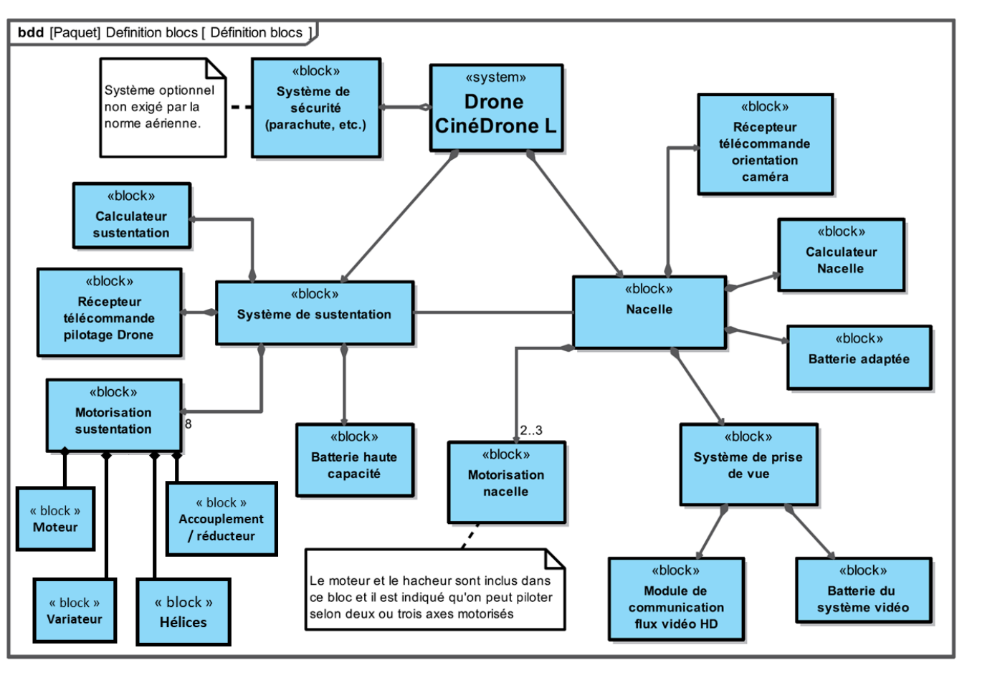
Les blocs peuvent être caractérisés par des propriétés : il en existe de plusieurs sortes (voir figure ci-dessous) mais les plus significatives sont :
- La propriété de type value permet d'exprimer une caractéristique quantifiable : pour un moteur par exemple, son couple, sa vitesse de rotation ou sa puissance nominale.
- La propriété de type part permet de représenter ce qui compose le bloc.
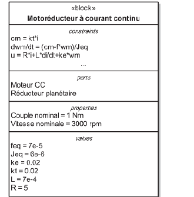
4.1.2. Diagramme de bloc interne (ibd)
Le diagramme de bloc interne (SysML Internal Block Diagram) reprend les caractéristiques du diagramme de blocs, à la différence que dans celui-ci les flux doivent être intégrés. Les flux peuvent être de tout type :
- Matière (métaux rare, matière composite, …)
- Energie (chaleur, électricité, …)
- Information (signaux analogique ou numérique, binaire, …)
« Comment les blocs interagissent-ils ? »
Remarque : Le cadre du diagramme représentant la frontière d'un bloc.
Illustration :
Pour la partie motorisation du système étudié, il est possible de mettre en place le diagramme de bloc interne suivant :
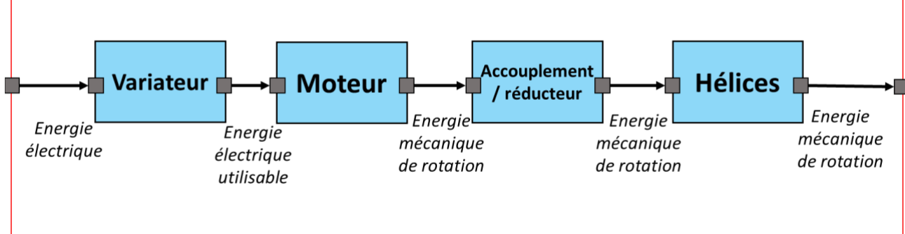
Remarques :
- Dans cet exemple de diagramme de bloc interne de la partie motorisation, les seuls blocs présents sont ceux directement reliés au bloc « source » présentés sur le diagramme de définition de blocs.
- Les interconnexions des différents blocs via les ports standard et flux représentés sur un diagramme de blocs internes renseignent sur les relations entre les blocs : ainsi, par exemple, ici, les flux entre les différents blocs sont des énergies, dont on précise, si possible, de quel type il s'agit.
- La structure de ce diagramme se rapproche très fortement de celle de la chaîne d'énergie.
5. Rappel sur le vocabulaire
5.1. Rappel sur les éléments d'association
| Terme | Signification |
|---|---|
| Include | Le cas d'utilisation source comprend obligatoirement le cas inclus |
| Extend | Le cas d'utilisation source est une extension possible du cas d'utilisation destination |
| Refine | Un ou plusieurs éléments du modèle redéfinissent une exigence |
| Derive | Une ou plusieurs exigences sont dérivées d'une exigence |
| DeriveReqt | Permet de relier une exigence d'un niveau général à une exigence d'un niveau plus spécialisée mais exprimant la même contrainte |
| Satisfy | Un ou plusieurs éléments du modèle permettent de satisfaire une exigence |
| Verify | Un ou plusieurs éléments du modèle permettent de vérifier et valider une exigence |
5.2. Rappel sur les relations
| Relation | Notation | Diagrammes concernés | Signification |
|---|---|---|---|
| Association | X ⎯→ Y | uc – bdd – ibd | X utilise Y |
| Dépendance | X ⇢→ Y | uc – req – bdd | X dépend de Y |
| Agrégation | X ⎯◇ Y | req – bdd | X entre dans la composition de Y sans être indispensable à son fonctionnement |
| Composition | X ⎯◆ Y | req – bdd | X entre dans la composition de Y et est indispensable à son fonctionnement |
| Généralisation | X ⎯▷ Y | req – bdd – ibd | X est une sorte de Y |
| Conteneur | X ⎯⊕ Y | req – bdd | Y contient X |
Quiz de fin de chapitre
Sources
- Cours « Le langage SysML », A. Roux, Lycée Gustave Eiffel (Bordeaux), PCSI/PSI — SII : aroux-sii.fr (site protégé par mot de passe — mot de passe d'accès :
psi*2627). - Document original (PDF) : 09-2026-09-19_SI_Cours_SysML.pdf.
- OMG Systems Modeling Language (SysML), spécification officielle : omg.org/spec/SysML.